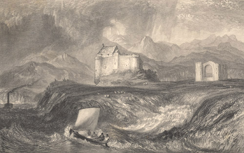

|
 Dunstaffnage Castle, engraved by W. Miller after J.M.W. Turner (1836).
From: The Prose Works of Sir Walter Scott, Bart. Vol. 24 (Edinburgh: Cadell, 1836). Dunstaffnage, to the north of Oban, was an important strategic site as early
as the 7th century when the Kings of Dalriada, the Kingdom
of the Scots who migrated to Argyll from Ireland, built a stronghold
there. Most of the surviving castle was built in the 13th century
by the Macdougalls, Lords of the Isles. It was captured
by Robert the Bruce in 1309 and passed to the Earls of Argyll in 1470.
The castle was burned in 1685 during an attempted uprising by
the Earl of Argyll against James II and VII. During the Jacobite uprising
of 1746-46, Flora
MacDonald was imprisoned here after assisting Prince Charles Edward
Stuart ('Bonnie Prince Charlie') to escape. |